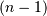

scipy.cluster.hierarchy.inconsistent¶
- scipy.cluster.hierarchy.inconsistent(Z, d=2)[source]¶
Calculates inconsistency statistics on a linkage.
Note: This function behaves similarly to the MATLAB(TM) inconsistent function.
Parameters : Z : ndarray
The  by 4 matrix encoding the linkage (hierarchical clustering). See linkage documentation for more information on its form.
d : int, optional
The number of links up to d levels below each non-singleton cluster.
Returns : R : ndarray
A by 5 matrix where the i‘th row contains the link statistics for the non-singleton cluster i. The link statistics are computed over the link heights for links levels below the cluster i. R[i,0] and R[i,1] are the mean and standard deviation of the link heights, respectively; R[i,2] is the number of links included in the calculation; and R[i,3] is the inconsistency coefficient,